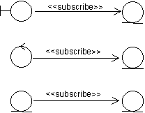
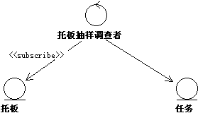
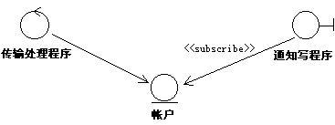
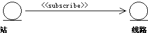

| 指南：预订关联 |
 |
|
说明在某些情况下，某个对象是由在另一对象中发生的特定事件来决定的。如果该事件是在边界对象或控制对象中发生的，那么该对象仅告知另一对象所发生的事件。但是，如果事件是在实体对象中发生的，情况就有些不同了。如果没有特别要求实体对象告知其他对象所发生的事件，它可能就不会这样做。 示例 假设在通过转帐从银行帐户中取款的可能情况下对系统进行了建模。如果所进行的提款造成帐户上出现负差额，则必须立即编写一条通知并发送给客户。是否通知客户与作为实体对象来建模的帐户无关。反之，边界对象应通知客户。 在上例中，边界对象必须反复地向实体对象提出问题“我所等待的事件发生了吗？”。要明确情况并将实施详细信息一直延迟到设计阶段，可使用一种特殊关联来表达该意图，该关联名为“预订关联”。 预订关联将任意类型的对象和实体对象关联起来，表示：当实体对象中发生特定事件时，将通知相关联的对象。建议您仅使用关联来关联实体对象，因为是实体对象的被动性引发了对关联的需要。另一方面，允许接口对象和控制对象发起通信。因此，无需通过“预订”，而可通过其他方式来履行其职责。  预订关联将任意类型的对象与实体对象关联起来。当相关联的实体对象中发生特定事件时，将通知关联的该对象。 注意，关联的方向显示只有预订对象知道两个对象之间的关系。对关联的描述完全包括在预定对象中。反过来，相关联的对象实体是以常规方式来定义的，并没有考虑到其他对象也有可能对该对象的任务感兴趣。这还意味着，可在不改变所预订的对象的情况下，对模型添加或删除预订方对象。 对预订关联分配了多重性，表示关联方对象可同时关联多少个目标对象实例。随后描述了关于关联的一个或多个条件，这些条件表示为通知关联方对象而必须发生的情况。该事件可能是关联值或属性值的更改，或是操作评估（某些部分）的更改。事件发生后，将向预订方对象通知该情况。 注意，将不传送关于事件任何结果的任何信息，仅传送事件已发生这一事实。如果关联方对象对事件发生后实体对象的生成状态感兴趣，它必须按常规方式与实体对象进行交互。这意味着两者之间还需要有链接。 示例 在“仓库处理系统”中，必须对托板进行抽样调查，以估量其寿命。 因此，每第一百次将托板从仓库的一处移动到另一处时，就要在特定的测试站对托板进行检查。这是通过从控制类“托板抽样调查者”到实体类“托板”的预订关联来建模的。“托板”的每个实例均使用计数器属性来计算托板移动的次数。托板经过一百次移动后，由于预订关联的条件，将通知“托板抽样调查者”。然后，“托板抽样调查者”创建一个特定“任务”，该任务将托板传送到测试站。“托板抽样调查者”与“托板”之间无需任何链接，但是它与“任务”之间必须存在一个链接才能启动任务。  托板经过一百次移动后，“托板抽样调查者”将创建一个新“任务”。 预订关联的条件应根据抽象特征来表示，而不是根据该关联的特定属性或操作。这样，关联方对象得以保持对所关联实体对象的内容（将会更改）的独立性。 预订关联并不总是关联两个对象实例。从类到实例的元关系也是有效的。这在下面几小节中有所描述。也存在预订关联将某一对象的类关联的情况，例如，如果特定事件恰恰是该类的实例化。 用法边界类的预订关联有时，如果事件发生在实体对象中，则有必要通知边界类。这将调用预订关联。 示例 考虑通过转帐方式从银行帐户提款。在此，对实体对象“帐户”执行操作的是控制对象“转帐处理程序”。如果“帐户”的余额为负，边界类“通知编写员”将向客户发送已准备好的通知。因此，该对象与“帐户”之间存在预订关联。规定的条件是余额为负。一旦该事件发生，则立即告知“通知编写员”。由于“通知编写员”的实例要不断注意“帐户”实例中的透支情况，所以这个特定的 预订关联是实例关联。 如果客户只接收到有关他的余额很低的信息，这就足够了。但是，如果还应告知客户余额低到何种程度，则“通知编写员”还必须对“帐户”执行操作才能知道确切的数额。要实现该操作，“通知编写员”与“帐户”之间必须存在链接。  边界类“通知编写员”预订了实体对象“帐户”中余额降到某一程度以下这一事件。如果“通知编写员”还需要知道赤字的确切金额，则它与“帐户”之间必须存在链接。 边界类的元关联的示例为：实体对象中的某个事件导致生成一个新窗口，且要向用户展示该窗口。之后，某一接口对象类预订该实体对象的实例。 实体类的预订关联示例 在处理网络的系统中，存在作为网络节点运作的多个站，且存在使站与站相互连接的线路。每个站均通过几条线路与其他站连接。站的容量取决于运作的线路的数目。如果有超过 80% 的线路处于运作状态，站的容量就高；如果只有不到 20% 的线路处于运作状态，站的容量就低；两者之间的则为中等容量。在系统模型中有两个实体对象，“站”和“线路”，两者之间存在预订关联。关联条件是：当“线路”状态（启用或禁用）发生更改时，应通知“站”。 进而言之，如果站的容量降低，将通知预订“站”的控制对象。这在下文中有所描述，该示例也将在下文中继续阐述。  一旦“线路”的某一实例发生状态更改，则立即通知“站”实例。 实体类之间的预订关联几乎总是实例关联，这是因为通常涉及已存在的实例。 但是，可能存在这样的情况：当所关联的实体对象中发生指定的事件时，则创建预订方实体对象的实例。 在这样的情况下，关联从一个类转到一个实例，即，这是一个元关联。还可设想：特定实体对象的某一实例希望知道何时创建另一实体对象的新实例。 控制类的预订关联示例 在上例中，实体对象“站”与实体对象“线路”之间存在预订关联。因此，每当“线路”实例的状态发生更改时，都将通知“站”。这种状态更改将改变“站”的容量。如果容量降低，即只有不到 20% 的线路处于运作状态，系统必须在网络中通过合适的新方式使该站无效。当然，这不是“站”的任务，但必须由控制对象“站管理员”来执行，后者与“站”的每个实例之间都存在预订关联。
控制对象“站管理员”预订实体对象“站”，后者反过来预订实体对象“线路”。 更为常见的是，控制对象的预订关联可能是从类到实例，反之亦然，也就是说，这是元关联。通常，直到事件真正发生后，才创建控制对象的实例，它将涉及到实体对象中发生的事件。但是还可设想：某个控制对象的实例希望知道何时创建特定实体对象的新实例。因此，在少数情况下， 预订关联可能是实例关联。 示例 在上例中，从“站管理员”到“站”的预订关联具有元关联的特征，也就是说，当“站”的容量降低时，类“站管理员”将得到通知。“站管理员”接收到该消息后，将创建一个涉及该事件的实例。 |

© Copyright IBM Corp. 1987, 2006. All Rights Reserved. |